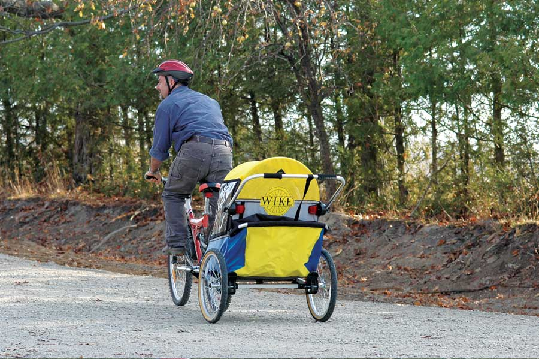

My wife and I have raised four kids from infancy to school age, and with each new baby, our bike riding together stopped for a while as we took turns staying home and looking after the latest little one. Not this time. Most mornings these days, our new adopted daughter comes with us in a bike trailer that also doubles as the easiest stroller I’ve ever pushed. This kind of rig isn’t new, but there are several reasons why we chose the Wike Softie ($549 at 866-584-9452) to make our lifestyle more pedal-friendly.
High-quality design and workmanship were key. We tried several different bike trailers over the last few years, but never found one that was built as well and that folded as compactly as the Wike. Another unique feature is the suspension. The entire seating carriage rests on two zigzag supports made of a resilient polymer. Not all of Wike’s trailers have this feature, but if you plan to ride on gravel roads and forest trails, that couple inches of suspension makes the ride much smoother.
There is one thing you need to watch out for with a Wike: A pair of chrome pipes snap together, one above the other on the right-hand side of the unit as it’s unfolding for use. Unless you’re careful, you’ll get your fingers pinched between these pipes and the stationary part of the metal frame. It’s not difficult to avoid, but it did take me two encounters before I learned my lesson.
Wike’s corporate philosophy was another big part of our buying decision. Their products are made by a team of eight people in a small North American facility, and are sold directly (and exclusively) to customers via the Internet. There are less expensive bike trailers on the market (and some that cost more), but no other company convinced me I was buying from a business that I’d like to work for myself.
With the Wike we get fresh air, exercise that doubles as family time, and an easy way to make more bike-powered errands. Except for a sore index finger, I’m happy.
|
 ROBERT MAXWELL With a Wike, author Steve Maxwell and baby Ellie join the rest of the family for bike rides. |
|
|